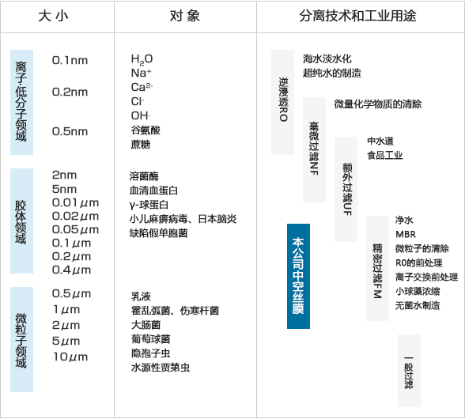

特长
- PE材质中空纤维膜柔软性高，耐弯曲性好，是使用后可再回收利用的环保产品。
- 多重对称的膜构造，即使长时间使用也可以保证稳定的分离性能。
- 用于水处理，水过滤的膜，要采用运输方便，操作简单的恒久亲水化膜，即使有突发的膜干燥情况，也无需再次进行亲水化处理。
- 除菌，除粒子用的空气过滤滤芯及水过滤用的排空气部件都使用疏水膜。
- 中空纤维膜容积率高，使得装置设计小型紧凑化成为可能。
主要用途
下水・排水领域主要用于膜分离活性污泥法(Membrane Bioreator, MBR)，无机・金属废水固液分离，水回收利用的深度处理等。
净水领域主要用于上水处理，地下水・工业用水的可饮用化处理，工程用水·锅炉用水·清洗用水‧冷却水的处理，RO，阴阳交换树脂，活性碳的前处理，配水・无菌海水制造等。
除菌‧除尘的水过滤或空气过滤用滤膜可以与其他机器组合，运用于各个产业领域，例如物理化学领域的桌上型纯水装置，医疗领域的临川检查装置、无菌水制造装置，电子领域的粒子计数器、净化空气的生产线、通风口处等。

中空纤维膜外观

中空纤维膜横断面

中空纤维膜外表面
当社中空糸膜と分離対象物質
